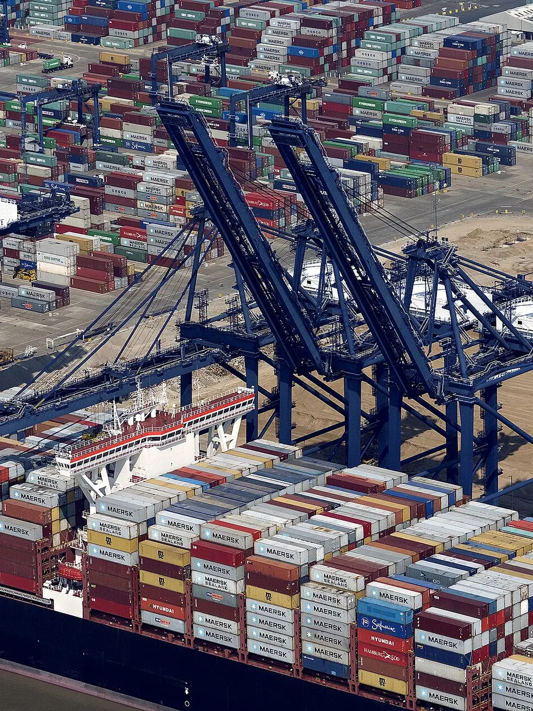

01 / İthalat
İthalat İşlemleri
Eşyanın yola çıktığı gün değil, dosyanın açıldığı gün başlarız. Satın alma kararından gümrük sahasındaki teslime kadar tüm zinciri tek elden yönetiriz.

- Teşvik konusu emtialarda proje hazırlığı ve teşvik belgesi işlemleri
- GTİP tespiti ve eşyanın doğru sınıflandırılması
- Yatırım teşviklerinde yerli ve ithal global listelerin hazırlanması, tasdiki
- Çeki listelerinin tanzimi ve tasdik ettirilmesi
- Vesaik teslimi, konşimento ciro işlemleri ve orijinal evrakın alınması
- Beyanname öncesi tereddütlerde küşat işlemi ve resmî görüş
- Gümrük kabul, tescil ve eşya muayenesi
- Eksiklik, hasar veya yanlışlık tutanakları; ilgili mercilerin bilgilendirilmesi
- Tahakkuk, teminata bağlı değer ve ücret yatırımı
- Eşyanın istenen yere taşınması ve yetkililere teslimi
- Banka taahhüt hesaplarının kapatılması, teminatların çözülmesi
- Vergi ve harç çeklerinin blokajı; ödemelerin zamanında ve online yapılması
Sınıflandırma hatası, vergi ve ceza demektir.GTİP eşyanın kimliğidir. Yanlış GTİP, doğru evrakla bile yanlış sonuç üretir. Bu yüzden sınıflandırmayı dosyanın en başında, yazılı olarak netleştiririz.